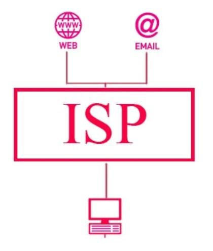

"Conceptos introductorios de web"
Medina Beltran Carlos Alberto
Centro de Estudios
Practica #2
Conceptos
- SSL
- Blog
- ISP
- P2P
- Streaming
- IM
- VoIP
- Malware
- Phishing
- Troyano
- Spyware
- Download
- DRM
- SPAM
- FTP
- SSL:Secure Sockets Layer Protocolo que permite que las aplicaciones transmitan informacion de forma segura.
 Regresar
Regresar
- Blog:Pagina web con estructura cronologica actualizable que trata un tema en especifico.
 Regresar
Regresar
- ISP:Internet Sevice Provider Proveedor de servicios de internet por una cuota mensual.

Regresar
- P2P:Peer-to-peer Red sin clientes ni servidores fijos.
 Regresar
Regresar
- Streaming:Escuchar musica o ver videos sin descargarlos antes de verlos.
Regresar
- IM:Mensajeria instantanea, comunicacion en tiempo real basada en texto.
 Regresar
Regresar
- VoIP:Voice over internet protocol hardware y software que permite usar internet como transmision de llamadas telefonicas.
 Regresar
Regresar
- Malware:Malicious software Programa o codigo malicioso que daña un sistema o logra un mal funcionamiento.
 Regresar
Regresar
- Phishing:Captacion de datos personales de manera ilicita por internet.
 Regresar
Regresar
- Troyano:Software malicioso que se presenta como un programa inofensivo pero que al ejecutarlo brinda acceso remoto al equipo.
 Regresar
Regresar
- Spyware:Software que recopila informacion de un ordenador y despues la transmite sin concentimiento del propietario.
Regresar
- Download:Copiar datos de una fuente principal a un dispositivo periferico.
 Regresar
Regresar
- DRM:Digital Right Managament Medio que controla la distribucion de archivos digitales.
 Regresar
Regresar
- SPAM:Correo no deseado que se envia a muchas personas con fines publicitarios.
Regresar
- FTP:File Transfer Protocol Transfiere grandes bloques de datos por la red.
Regresar